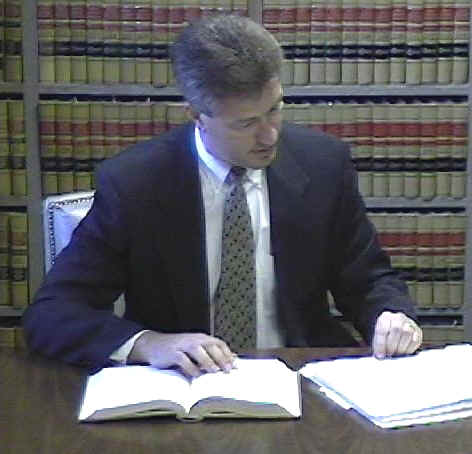

Attorney Profiles.
William G. Smock |
|
William G. Smock was born in Terre Haute, Indiana, on December 22, 1946. In 1968, he graduated from Indiana State University with a Bachelor of Science Degree, and in 1971 he received the degree of Doctor of Jurisprudence from Indiana University. William G. Smock is admitted to practice in all Indiana State Courts, the U.S. District Court, Southern District of Indiana, the United States Court of Appeals, Seventh Circuit, and the United States Supreme Court. William G. Smock served as a Deputy Attorney General in 1972 before entering private practice and establishing the firm. Mr. Smock has handled thousands of criminal cases and has tried numerous murder cases in both State and Federal Court. He has also handled death penalty cases in Vigo County, and other counties in the State of Indiana. Mr. Smock's memberships include the Terre Haute Bar Association (President, 1991 - 1992), Indiana State Bar Association, the United States Court of Appeals Seventh Circuit Bar Association (Past Chairman Committee on Criminal Law and Procedure), the Indiana Trial Lawyers Association, the Association of Trial Lawyers of America, the American Board of Trial Advocates, the National Association of Criminal Defense Lawyers, and the Indiana Association of Criminal Defense Lawyers Mr. Smock concentrates his practice in the areas of Criminal Law and Personal Injury. |
|
Joseph K. Etling |
|
|  | Joseph K. Etling was born in Terre Haute, Indiana on June 7, 1963. He graduated from Wabash College in 1985 with a Bachelor of Arts Degree, and, in 1988, he graduated from Indiana University with the degree of Doctor of Jurisprudence. Joseph K. Etling is admitted to practice in all Indiana State Courts, the U.S. District Court, Southern District of Indiana, the U.S. Court of Appeals, Seventh Circuit, and the U.S. Supreme Court. Joseph K. Etling has been in private practice in Terre Haute and surrounding communities since 1988. Mr. Etling is an active member of the Terre Haute, Indiana State and American Bar Associations, the Seventh Circuit Bar Association, the Indiana Trial Lawyers Association, National Association of Criminal Defense Lawyers, the Indiana Association of Criminal Defense Lawyers, and the Association of Trial Lawyers of America. Mr. Etling concentrates his practice in the areas of Criminal Law, Personal Injury, and Family Law. |
Michael A. Slagle |
|
Michael A. Slagle was born in Hamilton, Ohio on January 23, 1969. Mr. Slagle served as an infantry soldier in the Army from 1987 to1991, and is a veteran of Desert Storm. He graduated from Ball State University, Magna Cum Laude, with a Bachelor of Science Degree in 1995, and graduated from Indiana University with the degree of Doctor of Jurisprudence in 1998. Michael A. Slagle has been in private practice as an associate attorney with Smock and Etling since being admitted to the bar in 1998. Mr. Slagle is also a Public Defender in Vigo County. Mr. Slagle has also served as a court appointed Public Defender. Mr. Slagle is admitted to practice in all Indiana State Courts, and the U.S. District Court, Northern and Southern District of Indiana. His memberships include the Terre Haute, Indiana State, American Bar Associations. Mr. Slagle is also Past President of the Terre Haute Bar Association. Mr. Slagle practices in the areas of Family Law Personal Injury and Criminal Law, and Appellate Law. |